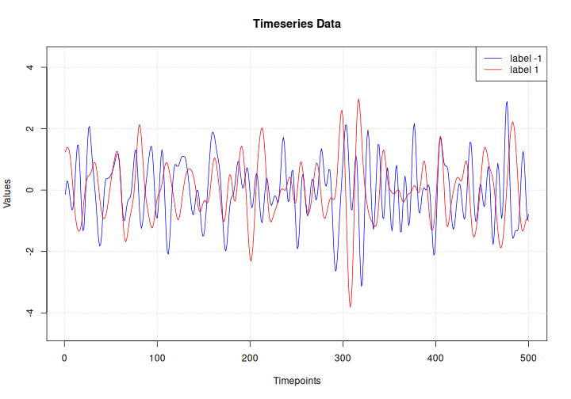
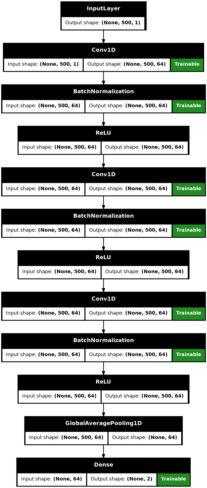
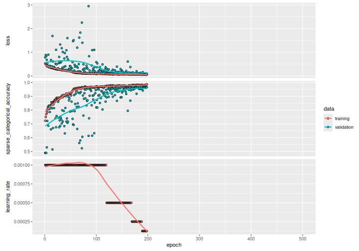
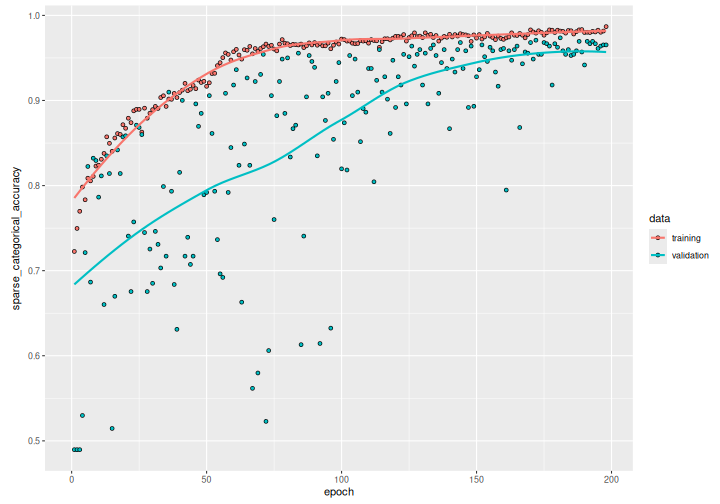

Timeseries classification from scratch
Source:vignettes/examples/timeseries/timeseries_classification_from_scratch.Rmd
timeseries_classification_from_scratch.RmdIntroduction
This example shows how to do timeseries classification from scratch, starting from raw CSV timeseries files on disk. We demonstrate the workflow on the FordA dataset from the UCR/UEA archive.
Setup
library(keras3)
use_backend("jax")Load the data: the FordA dataset
Dataset description
The dataset we are using here is called FordA. The data comes from the UCR archive. The dataset contains 3601 training instances and another 1320 testing instances. Each timeseries corresponds to a measurement of engine noise captured by a motor sensor. For this task, the goal is to automatically detect the presence of a specific issue with the engine. The problem is a balanced binary classification task. The full description of this dataset can be found here.
Read the TSV data
We will use the FordA_TRAIN file for training and the
FordA_TEST file for testing. The simplicity of this dataset
allows us to demonstrate effectively how to use ConvNets for timeseries
classification. In this file, the first column corresponds to the
label.
get_data <- function(path) {
if(path |> startsWith("https://"))
path <- get_file(origin = path) # cache file locally
data <- readr::read_tsv(
path, col_names = FALSE,
# Each row is: one integer (the label),
# followed by 500 doubles (the timeseries)
col_types = paste0("i", strrep("d", 500))
)
y <- as.matrix(data[[1]])
x <- as.matrix(data[,-1])
dimnames(x) <- dimnames(y) <- NULL
list(x, y)
}
root_url <- "https://raw.githubusercontent.com/hfawaz/cd-diagram/master/FordA/"
c(x_train, y_train) %<-% get_data(paste0(root_url, "FordA_TRAIN.tsv"))
c(x_test, y_test) %<-% get_data(paste0(root_url, "FordA_TEST.tsv"))
str(keras3:::named_list(
x_train, y_train,
x_test, y_test
))## List of 4
## $ x_train: num [1:3601, 1:500] -0.797 0.805 0.728 -0.234 -0.171 ...
## $ y_train: int [1:3601, 1] -1 1 -1 -1 -1 1 1 1 1 1 ...
## $ x_test : num [1:1320, 1:500] -0.14 0.334 0.717 1.24 -1.159 ...
## $ y_test : int [1:1320, 1] -1 -1 -1 1 -1 1 -1 -1 1 1 ...Visualize the data
Here we visualize one timeseries example for each class in the dataset.
plot(NULL, main = "Timeseries Data",
xlab = "Timepoints", ylab = "Values",
xlim = c(1, ncol(x_test)),
ylim = range(x_test))
grid()
lines(x_test[match(-1, y_test), ], col = "blue")
lines(x_test[match( 1, y_test), ], col = "red")
legend("topright", legend=c("label -1", "label 1"), col=c("blue", "red"), lty=1)
Standardize the data
Our timeseries are already in a single length (500). However, their values are usually in various ranges. This is not ideal for a neural network; in general we should seek to make the input values normalized. For this specific dataset, the data is already z-normalized: each timeseries sample has a mean equal to zero and a standard deviation equal to one. This type of normalization is very common for timeseries classification problems, see Bagnall et al. (2016).
Note that the timeseries data used here are univariate, meaning we only have one channel per timeseries example. We will therefore transform the timeseries into a multivariate one with one channel using a simple reshaping via numpy. This will allow us to construct a model that is easily applicable to multivariate time series.
Finally, in order to use
sparse_categorical_crossentropy, we will have to count the
number of classes beforehand.
Now we shuffle the training set because we will be using the
validation_split option later when training.
c(x_train, y_train) %<-% listarrays::shuffle_rows(x_train, y_train)
# idx <- sample.int(nrow(x_train))
# x_train %<>% .[idx,, ,drop = FALSE]
# y_train %<>% .[idx, ,drop = FALSE]Standardize the labels to positive integers. The expected labels will then be 0 and 1.
y_train[y_train == -1L] <- 0L
y_test[y_test == -1L] <- 0LBuild a model
We build a Fully Convolutional Neural Network originally proposed in this paper. The implementation is based on the TF 2 version provided here. The following hyperparameters (kernel_size, filters, the usage of BatchNorm) were found via random search using KerasTuner.
make_model <- function(input_shape) {
inputs <- keras_input(input_shape)
outputs <- inputs |>
# conv1
layer_conv_1d(filters = 64, kernel_size = 3, padding = "same") |>
layer_batch_normalization() |>
layer_activation_relu() |>
# conv2
layer_conv_1d(filters = 64, kernel_size = 3, padding = "same") |>
layer_batch_normalization() |>
layer_activation_relu() |>
# conv3
layer_conv_1d(filters = 64, kernel_size = 3, padding = "same") |>
layer_batch_normalization() |>
layer_activation_relu() |>
# pooling
layer_global_average_pooling_1d() |>
# final output
layer_dense(num_classes, activation = "softmax")
keras_model(inputs, outputs)
}
model <- make_model(input_shape = dim(x_train)[-1])
model## Model: "functional"
## ┏━━━━━━━━━━━━━━━━━━━━━━━━━━━━━┳━━━━━━━━━━━━━━━━━━━━━━━┳━━━━━━━━━━━━┳━━━━━━━┓
## ┃ Layer (type) ┃ Output Shape ┃ Param # ┃ Trai… ┃
## ┡━━━━━━━━━━━━━━━━━━━━━━━━━━━━━╇━━━━━━━━━━━━━━━━━━━━━━━╇━━━━━━━━━━━━╇━━━━━━━┩
## │ input_layer (InputLayer) │ (None, 500, 1) │ 0 │ - │
## ├─────────────────────────────┼───────────────────────┼────────────┼───────┤
## │ conv1d (Conv1D) │ (None, 500, 64) │ 256 │ Y │
## ├─────────────────────────────┼───────────────────────┼────────────┼───────┤
## │ batch_normalization │ (None, 500, 64) │ 256 │ Y │
## │ (BatchNormalization) │ │ │ │
## ├─────────────────────────────┼───────────────────────┼────────────┼───────┤
## │ re_lu (ReLU) │ (None, 500, 64) │ 0 │ - │
## ├─────────────────────────────┼───────────────────────┼────────────┼───────┤
## │ conv1d_1 (Conv1D) │ (None, 500, 64) │ 12,352 │ Y │
## ├─────────────────────────────┼───────────────────────┼────────────┼───────┤
## │ batch_normalization_1 │ (None, 500, 64) │ 256 │ Y │
## │ (BatchNormalization) │ │ │ │
## ├─────────────────────────────┼───────────────────────┼────────────┼───────┤
## │ re_lu_1 (ReLU) │ (None, 500, 64) │ 0 │ - │
## ├─────────────────────────────┼───────────────────────┼────────────┼───────┤
## │ conv1d_2 (Conv1D) │ (None, 500, 64) │ 12,352 │ Y │
## ├─────────────────────────────┼───────────────────────┼────────────┼───────┤
## │ batch_normalization_2 │ (None, 500, 64) │ 256 │ Y │
## │ (BatchNormalization) │ │ │ │
## ├─────────────────────────────┼───────────────────────┼────────────┼───────┤
## │ re_lu_2 (ReLU) │ (None, 500, 64) │ 0 │ - │
## ├─────────────────────────────┼───────────────────────┼────────────┼───────┤
## │ global_average_pooling1d │ (None, 64) │ 0 │ - │
## │ (GlobalAveragePooling1D) │ │ │ │
## ├─────────────────────────────┼───────────────────────┼────────────┼───────┤
## │ dense (Dense) │ (None, 2) │ 130 │ Y │
## └─────────────────────────────┴───────────────────────┴────────────┴───────┘
## Total params: 25,858 (101.01 KB)
## Trainable params: 25,474 (99.51 KB)
## Non-trainable params: 384 (1.50 KB)
plot(model, show_shapes = TRUE)
plot of chunk unnamed-chunk-9
Train the model
epochs <- 500
batch_size <- 32
callbacks <- c(
callback_model_checkpoint(
"best_model.keras", save_best_only = TRUE,
monitor = "val_loss"
),
callback_reduce_lr_on_plateau(
monitor = "val_loss", factor = 0.5,
patience = 20, min_lr = 0.0001
),
callback_early_stopping(
monitor = "val_loss", patience = 50,
verbose = 1
)
)
model |> compile(
optimizer = "adam",
loss = "sparse_categorical_crossentropy",
metrics = "sparse_categorical_accuracy"
)
history <- model |> fit(
x_train, y_train,
batch_size = batch_size,
epochs = epochs,
callbacks = callbacks,
validation_split = 0.2
)## Epoch 1/500
## 90/90 - 2s - 18ms/step - loss: 0.5305 - sparse_categorical_accuracy: 0.7226 - val_loss: 0.7836 - val_sparse_categorical_accuracy: 0.4896 - learning_rate: 0.0010
## Epoch 2/500
## 90/90 - 0s - 3ms/step - loss: 0.4923 - sparse_categorical_accuracy: 0.7497 - val_loss: 0.8835 - val_sparse_categorical_accuracy: 0.4896 - learning_rate: 0.0010
## Epoch 3/500
## 90/90 - 0s - 2ms/step - loss: 0.4543 - sparse_categorical_accuracy: 0.7698 - val_loss: 0.8377 - val_sparse_categorical_accuracy: 0.4896 - learning_rate: 0.0010
## Epoch 4/500
## 90/90 - 0s - 3ms/step - loss: 0.4099 - sparse_categorical_accuracy: 0.7983 - val_loss: 0.6798 - val_sparse_categorical_accuracy: 0.5298 - learning_rate: 0.0010
## Epoch 5/500
## 90/90 - 0s - 3ms/step - loss: 0.4210 - sparse_categorical_accuracy: 0.7833 - val_loss: 0.5218 - val_sparse_categorical_accuracy: 0.7212 - learning_rate: 0.0010
## Epoch 6/500
## 90/90 - 0s - 3ms/step - loss: 0.4007 - sparse_categorical_accuracy: 0.8087 - val_loss: 0.4295 - val_sparse_categorical_accuracy: 0.8225 - learning_rate: 0.0010
## Epoch 7/500
## 90/90 - 0s - 2ms/step - loss: 0.3931 - sparse_categorical_accuracy: 0.8056 - val_loss: 0.8992 - val_sparse_categorical_accuracy: 0.6865 - learning_rate: 0.0010
## Epoch 8/500
## 90/90 - 0s - 2ms/step - loss: 0.3809 - sparse_categorical_accuracy: 0.8108 - val_loss: 0.3725 - val_sparse_categorical_accuracy: 0.8322 - learning_rate: 0.0010
## Epoch 9/500
## 90/90 - 0s - 2ms/step - loss: 0.3734 - sparse_categorical_accuracy: 0.8229 - val_loss: 0.3647 - val_sparse_categorical_accuracy: 0.8294 - learning_rate: 0.0010
## Epoch 10/500
## 90/90 - 0s - 2ms/step - loss: 0.3712 - sparse_categorical_accuracy: 0.8240 - val_loss: 0.4302 - val_sparse_categorical_accuracy: 0.7864 - learning_rate: 0.0010
## Epoch 11/500
## 90/90 - 0s - 2ms/step - loss: 0.3607 - sparse_categorical_accuracy: 0.8309 - val_loss: 0.3896 - val_sparse_categorical_accuracy: 0.8114 - learning_rate: 0.0010
## Epoch 12/500
## 90/90 - 0s - 2ms/step - loss: 0.3506 - sparse_categorical_accuracy: 0.8378 - val_loss: 0.6731 - val_sparse_categorical_accuracy: 0.6602 - learning_rate: 0.0010
## Epoch 13/500
## 90/90 - 0s - 2ms/step - loss: 0.3334 - sparse_categorical_accuracy: 0.8573 - val_loss: 0.3612 - val_sparse_categorical_accuracy: 0.8350 - learning_rate: 0.0010
## Epoch 14/500
## 90/90 - 0s - 2ms/step - loss: 0.3367 - sparse_categorical_accuracy: 0.8497 - val_loss: 0.4063 - val_sparse_categorical_accuracy: 0.8141 - learning_rate: 0.0010
## Epoch 15/500
## 90/90 - 0s - 2ms/step - loss: 0.3361 - sparse_categorical_accuracy: 0.8403 - val_loss: 1.6892 - val_sparse_categorical_accuracy: 0.5146 - learning_rate: 0.0010
## Epoch 16/500
## 90/90 - 0s - 2ms/step - loss: 0.3340 - sparse_categorical_accuracy: 0.8559 - val_loss: 0.6099 - val_sparse_categorical_accuracy: 0.6699 - learning_rate: 0.0010
## Epoch 17/500
## 90/90 - 0s - 2ms/step - loss: 0.3138 - sparse_categorical_accuracy: 0.8611 - val_loss: 0.3490 - val_sparse_categorical_accuracy: 0.8419 - learning_rate: 0.0010
## Epoch 18/500
## 90/90 - 0s - 2ms/step - loss: 0.3140 - sparse_categorical_accuracy: 0.8601 - val_loss: 0.3829 - val_sparse_categorical_accuracy: 0.8141 - learning_rate: 0.0010
## Epoch 19/500
## 90/90 - 0s - 2ms/step - loss: 0.3076 - sparse_categorical_accuracy: 0.8715 - val_loss: 0.3382 - val_sparse_categorical_accuracy: 0.8571 - learning_rate: 0.0010
## Epoch 20/500
## 90/90 - 0s - 2ms/step - loss: 0.3069 - sparse_categorical_accuracy: 0.8674 - val_loss: 0.3206 - val_sparse_categorical_accuracy: 0.8585 - learning_rate: 0.0010
## Epoch 21/500
## 90/90 - 0s - 2ms/step - loss: 0.2841 - sparse_categorical_accuracy: 0.8792 - val_loss: 0.5172 - val_sparse_categorical_accuracy: 0.7406 - learning_rate: 0.0010
## Epoch 22/500
## 90/90 - 0s - 2ms/step - loss: 0.2988 - sparse_categorical_accuracy: 0.8740 - val_loss: 1.1048 - val_sparse_categorical_accuracy: 0.6755 - learning_rate: 0.0010
## Epoch 23/500
## 90/90 - 0s - 2ms/step - loss: 0.2797 - sparse_categorical_accuracy: 0.8878 - val_loss: 0.4888 - val_sparse_categorical_accuracy: 0.7573 - learning_rate: 0.0010
## Epoch 24/500
## 90/90 - 0s - 2ms/step - loss: 0.2772 - sparse_categorical_accuracy: 0.8896 - val_loss: 0.2943 - val_sparse_categorical_accuracy: 0.8710 - learning_rate: 0.0010
## Epoch 25/500
## 90/90 - 0s - 2ms/step - loss: 0.2701 - sparse_categorical_accuracy: 0.8896 - val_loss: 0.3093 - val_sparse_categorical_accuracy: 0.8682 - learning_rate: 0.0010
## Epoch 26/500
## 90/90 - 0s - 2ms/step - loss: 0.3152 - sparse_categorical_accuracy: 0.8628 - val_loss: 0.3156 - val_sparse_categorical_accuracy: 0.8599 - learning_rate: 0.0010
## Epoch 27/500
## 90/90 - 0s - 2ms/step - loss: 0.2683 - sparse_categorical_accuracy: 0.8910 - val_loss: 0.5393 - val_sparse_categorical_accuracy: 0.7448 - learning_rate: 0.0010
## Epoch 28/500
## 90/90 - 0s - 2ms/step - loss: 0.2819 - sparse_categorical_accuracy: 0.8792 - val_loss: 0.8030 - val_sparse_categorical_accuracy: 0.6755 - learning_rate: 0.0010
## Epoch 29/500
## 90/90 - 0s - 2ms/step - loss: 0.2651 - sparse_categorical_accuracy: 0.8851 - val_loss: 0.5675 - val_sparse_categorical_accuracy: 0.7254 - learning_rate: 0.0010
## Epoch 30/500
## 90/90 - 0s - 2ms/step - loss: 0.2615 - sparse_categorical_accuracy: 0.8892 - val_loss: 1.3264 - val_sparse_categorical_accuracy: 0.6852 - learning_rate: 0.0010
## Epoch 31/500
## 90/90 - 0s - 2ms/step - loss: 0.2640 - sparse_categorical_accuracy: 0.8931 - val_loss: 0.5669 - val_sparse_categorical_accuracy: 0.7462 - learning_rate: 0.0010
## Epoch 32/500
## 90/90 - 0s - 2ms/step - loss: 0.2569 - sparse_categorical_accuracy: 0.8906 - val_loss: 0.6081 - val_sparse_categorical_accuracy: 0.7309 - learning_rate: 0.0010
## Epoch 33/500
## 90/90 - 0s - 2ms/step - loss: 0.2432 - sparse_categorical_accuracy: 0.9035 - val_loss: 1.1732 - val_sparse_categorical_accuracy: 0.7032 - learning_rate: 0.0010
## Epoch 34/500
## 90/90 - 0s - 2ms/step - loss: 0.2375 - sparse_categorical_accuracy: 0.9056 - val_loss: 0.3426 - val_sparse_categorical_accuracy: 0.7989 - learning_rate: 0.0010
## Epoch 35/500
## 90/90 - 0s - 2ms/step - loss: 0.2553 - sparse_categorical_accuracy: 0.8931 - val_loss: 1.0129 - val_sparse_categorical_accuracy: 0.7171 - learning_rate: 0.0010
## Epoch 36/500
## 90/90 - 0s - 2ms/step - loss: 0.2440 - sparse_categorical_accuracy: 0.9017 - val_loss: 0.2432 - val_sparse_categorical_accuracy: 0.9098 - learning_rate: 0.0010
## Epoch 37/500
## 90/90 - 0s - 2ms/step - loss: 0.2382 - sparse_categorical_accuracy: 0.9014 - val_loss: 0.3763 - val_sparse_categorical_accuracy: 0.7933 - learning_rate: 0.0010
## Epoch 38/500
## 90/90 - 0s - 2ms/step - loss: 0.2385 - sparse_categorical_accuracy: 0.9083 - val_loss: 0.7371 - val_sparse_categorical_accuracy: 0.6838 - learning_rate: 0.0010
## Epoch 39/500
## 90/90 - 0s - 2ms/step - loss: 0.2415 - sparse_categorical_accuracy: 0.9035 - val_loss: 0.9659 - val_sparse_categorical_accuracy: 0.6311 - learning_rate: 0.0010
## Epoch 40/500
## 90/90 - 0s - 2ms/step - loss: 0.2332 - sparse_categorical_accuracy: 0.9094 - val_loss: 0.4095 - val_sparse_categorical_accuracy: 0.8155 - learning_rate: 0.0010
## Epoch 41/500
## 90/90 - 0s - 2ms/step - loss: 0.2226 - sparse_categorical_accuracy: 0.9122 - val_loss: 0.2591 - val_sparse_categorical_accuracy: 0.9001 - learning_rate: 0.0010
## Epoch 42/500
## 90/90 - 0s - 2ms/step - loss: 0.2129 - sparse_categorical_accuracy: 0.9201 - val_loss: 1.0859 - val_sparse_categorical_accuracy: 0.7171 - learning_rate: 0.0010
## Epoch 43/500
## 90/90 - 0s - 2ms/step - loss: 0.2224 - sparse_categorical_accuracy: 0.9115 - val_loss: 0.8042 - val_sparse_categorical_accuracy: 0.7393 - learning_rate: 0.0010
## Epoch 44/500
## 90/90 - 0s - 2ms/step - loss: 0.2195 - sparse_categorical_accuracy: 0.9132 - val_loss: 1.5991 - val_sparse_categorical_accuracy: 0.7074 - learning_rate: 0.0010
## Epoch 45/500
## 90/90 - 0s - 2ms/step - loss: 0.2159 - sparse_categorical_accuracy: 0.9177 - val_loss: 0.6995 - val_sparse_categorical_accuracy: 0.7171 - learning_rate: 0.0010
## Epoch 46/500
## 90/90 - 0s - 2ms/step - loss: 0.2213 - sparse_categorical_accuracy: 0.9139 - val_loss: 0.2569 - val_sparse_categorical_accuracy: 0.8960 - learning_rate: 0.0010
## Epoch 47/500
## 90/90 - 0s - 2ms/step - loss: 0.2033 - sparse_categorical_accuracy: 0.9240 - val_loss: 0.3035 - val_sparse_categorical_accuracy: 0.8696 - learning_rate: 0.0010
## Epoch 48/500
## 90/90 - 0s - 2ms/step - loss: 0.1990 - sparse_categorical_accuracy: 0.9212 - val_loss: 0.2628 - val_sparse_categorical_accuracy: 0.8849 - learning_rate: 0.0010
## Epoch 49/500
## 90/90 - 0s - 2ms/step - loss: 0.1926 - sparse_categorical_accuracy: 0.9226 - val_loss: 0.4207 - val_sparse_categorical_accuracy: 0.7892 - learning_rate: 0.0010
## Epoch 50/500
## 90/90 - 0s - 2ms/step - loss: 0.2176 - sparse_categorical_accuracy: 0.9167 - val_loss: 0.4023 - val_sparse_categorical_accuracy: 0.7920 - learning_rate: 0.0010
## Epoch 51/500
## 90/90 - 0s - 2ms/step - loss: 0.2038 - sparse_categorical_accuracy: 0.9208 - val_loss: 0.2298 - val_sparse_categorical_accuracy: 0.9057 - learning_rate: 0.0010
## Epoch 52/500
## 90/90 - 0s - 2ms/step - loss: 0.1818 - sparse_categorical_accuracy: 0.9316 - val_loss: 0.3278 - val_sparse_categorical_accuracy: 0.8613 - learning_rate: 0.0010
## Epoch 53/500
## 90/90 - 0s - 2ms/step - loss: 0.1741 - sparse_categorical_accuracy: 0.9319 - val_loss: 0.3288 - val_sparse_categorical_accuracy: 0.7933 - learning_rate: 0.0010
## Epoch 54/500
## 90/90 - 0s - 2ms/step - loss: 0.1647 - sparse_categorical_accuracy: 0.9410 - val_loss: 0.5812 - val_sparse_categorical_accuracy: 0.7365 - learning_rate: 0.0010
## Epoch 55/500
## 90/90 - 0s - 2ms/step - loss: 0.1594 - sparse_categorical_accuracy: 0.9444 - val_loss: 1.4706 - val_sparse_categorical_accuracy: 0.6963 - learning_rate: 0.0010
## Epoch 56/500
## 90/90 - 0s - 2ms/step - loss: 0.1491 - sparse_categorical_accuracy: 0.9503 - val_loss: 1.5120 - val_sparse_categorical_accuracy: 0.6921 - learning_rate: 0.0010
## Epoch 57/500
## 90/90 - 0s - 2ms/step - loss: 0.1445 - sparse_categorical_accuracy: 0.9559 - val_loss: 0.2280 - val_sparse_categorical_accuracy: 0.9085 - learning_rate: 0.0010
## Epoch 58/500
## 90/90 - 0s - 2ms/step - loss: 0.1351 - sparse_categorical_accuracy: 0.9542 - val_loss: 0.4713 - val_sparse_categorical_accuracy: 0.7920 - learning_rate: 0.0010
## Epoch 59/500
## 90/90 - 0s - 2ms/step - loss: 0.1398 - sparse_categorical_accuracy: 0.9476 - val_loss: 0.3858 - val_sparse_categorical_accuracy: 0.8447 - learning_rate: 0.0010
## Epoch 60/500
## 90/90 - 0s - 2ms/step - loss: 0.1382 - sparse_categorical_accuracy: 0.9573 - val_loss: 0.1736 - val_sparse_categorical_accuracy: 0.9182 - learning_rate: 0.0010
## Epoch 61/500
## 90/90 - 0s - 2ms/step - loss: 0.1266 - sparse_categorical_accuracy: 0.9601 - val_loss: 0.1732 - val_sparse_categorical_accuracy: 0.9362 - learning_rate: 0.0010
## Epoch 62/500
## 90/90 - 0s - 2ms/step - loss: 0.1382 - sparse_categorical_accuracy: 0.9535 - val_loss: 0.4091 - val_sparse_categorical_accuracy: 0.8239 - learning_rate: 0.0010
## Epoch 63/500
## 90/90 - 0s - 2ms/step - loss: 0.1308 - sparse_categorical_accuracy: 0.9486 - val_loss: 1.1959 - val_sparse_categorical_accuracy: 0.6630 - learning_rate: 0.0010
## Epoch 64/500
## 90/90 - 0s - 2ms/step - loss: 0.1277 - sparse_categorical_accuracy: 0.9597 - val_loss: 0.3489 - val_sparse_categorical_accuracy: 0.8488 - learning_rate: 0.0010
## Epoch 65/500
## 90/90 - 0s - 2ms/step - loss: 0.1227 - sparse_categorical_accuracy: 0.9590 - val_loss: 0.1940 - val_sparse_categorical_accuracy: 0.9265 - learning_rate: 0.0010
## Epoch 66/500
## 90/90 - 0s - 2ms/step - loss: 0.1143 - sparse_categorical_accuracy: 0.9635 - val_loss: 0.5005 - val_sparse_categorical_accuracy: 0.8239 - learning_rate: 0.0010
## Epoch 67/500
## 90/90 - 0s - 2ms/step - loss: 0.1307 - sparse_categorical_accuracy: 0.9549 - val_loss: 1.6204 - val_sparse_categorical_accuracy: 0.5617 - learning_rate: 0.0010
## Epoch 68/500
## 90/90 - 0s - 2ms/step - loss: 0.1182 - sparse_categorical_accuracy: 0.9611 - val_loss: 0.1951 - val_sparse_categorical_accuracy: 0.9223 - learning_rate: 0.0010
## Epoch 69/500
## 90/90 - 0s - 2ms/step - loss: 0.1234 - sparse_categorical_accuracy: 0.9576 - val_loss: 1.8298 - val_sparse_categorical_accuracy: 0.5798 - learning_rate: 0.0010
## Epoch 70/500
## 90/90 - 0s - 2ms/step - loss: 0.1159 - sparse_categorical_accuracy: 0.9611 - val_loss: 0.1561 - val_sparse_categorical_accuracy: 0.9307 - learning_rate: 0.0010
## Epoch 71/500
## 90/90 - 0s - 2ms/step - loss: 0.1134 - sparse_categorical_accuracy: 0.9632 - val_loss: 0.1365 - val_sparse_categorical_accuracy: 0.9542 - learning_rate: 0.0010
## Epoch 72/500
## 90/90 - 0s - 2ms/step - loss: 0.1126 - sparse_categorical_accuracy: 0.9663 - val_loss: 2.2533 - val_sparse_categorical_accuracy: 0.5229 - learning_rate: 0.0010
## Epoch 73/500
## 90/90 - 0s - 2ms/step - loss: 0.1058 - sparse_categorical_accuracy: 0.9635 - val_loss: 1.4030 - val_sparse_categorical_accuracy: 0.6061 - learning_rate: 0.0010
## Epoch 74/500
## 90/90 - 0s - 2ms/step - loss: 0.1081 - sparse_categorical_accuracy: 0.9649 - val_loss: 0.2645 - val_sparse_categorical_accuracy: 0.9057 - learning_rate: 0.0010
## Epoch 75/500
## 90/90 - 0s - 2ms/step - loss: 0.1170 - sparse_categorical_accuracy: 0.9604 - val_loss: 0.4884 - val_sparse_categorical_accuracy: 0.7601 - learning_rate: 0.0010
## Epoch 76/500
## 90/90 - 0s - 2ms/step - loss: 0.1191 - sparse_categorical_accuracy: 0.9583 - val_loss: 0.3061 - val_sparse_categorical_accuracy: 0.8821 - learning_rate: 0.0010
## Epoch 77/500
## 90/90 - 0s - 2ms/step - loss: 0.1073 - sparse_categorical_accuracy: 0.9663 - val_loss: 0.1947 - val_sparse_categorical_accuracy: 0.9223 - learning_rate: 0.0010
## Epoch 78/500
## 90/90 - 0s - 2ms/step - loss: 0.1005 - sparse_categorical_accuracy: 0.9715 - val_loss: 0.1292 - val_sparse_categorical_accuracy: 0.9487 - learning_rate: 0.0010
## Epoch 79/500
## 90/90 - 0s - 2ms/step - loss: 0.1013 - sparse_categorical_accuracy: 0.9674 - val_loss: 0.3165 - val_sparse_categorical_accuracy: 0.8849 - learning_rate: 0.0010
## Epoch 80/500
## 90/90 - 0s - 2ms/step - loss: 0.1003 - sparse_categorical_accuracy: 0.9667 - val_loss: 0.1305 - val_sparse_categorical_accuracy: 0.9501 - learning_rate: 0.0010
## Epoch 81/500
## 90/90 - 0s - 2ms/step - loss: 0.1058 - sparse_categorical_accuracy: 0.9646 - val_loss: 0.4370 - val_sparse_categorical_accuracy: 0.8336 - learning_rate: 0.0010
## Epoch 82/500
## 90/90 - 0s - 2ms/step - loss: 0.0978 - sparse_categorical_accuracy: 0.9660 - val_loss: 0.3413 - val_sparse_categorical_accuracy: 0.8669 - learning_rate: 0.0010
## Epoch 83/500
## 90/90 - 0s - 2ms/step - loss: 0.1006 - sparse_categorical_accuracy: 0.9656 - val_loss: 0.3076 - val_sparse_categorical_accuracy: 0.8710 - learning_rate: 0.0010
## Epoch 84/500
## 90/90 - 0s - 2ms/step - loss: 0.1026 - sparse_categorical_accuracy: 0.9653 - val_loss: 0.1254 - val_sparse_categorical_accuracy: 0.9556 - learning_rate: 0.0010
## Epoch 85/500
## 90/90 - 0s - 2ms/step - loss: 0.1027 - sparse_categorical_accuracy: 0.9663 - val_loss: 2.9481 - val_sparse_categorical_accuracy: 0.6130 - learning_rate: 0.0010
## Epoch 86/500
## 90/90 - 0s - 2ms/step - loss: 0.1048 - sparse_categorical_accuracy: 0.9622 - val_loss: 0.8337 - val_sparse_categorical_accuracy: 0.7406 - learning_rate: 0.0010
## Epoch 87/500
## 90/90 - 0s - 2ms/step - loss: 0.1054 - sparse_categorical_accuracy: 0.9642 - val_loss: 0.2322 - val_sparse_categorical_accuracy: 0.9043 - learning_rate: 0.0010
## Epoch 88/500
## 90/90 - 0s - 2ms/step - loss: 0.0954 - sparse_categorical_accuracy: 0.9677 - val_loss: 0.1307 - val_sparse_categorical_accuracy: 0.9528 - learning_rate: 0.0010
## Epoch 89/500
## 90/90 - 0s - 2ms/step - loss: 0.0975 - sparse_categorical_accuracy: 0.9653 - val_loss: 0.1216 - val_sparse_categorical_accuracy: 0.9459 - learning_rate: 0.0010
## Epoch 90/500
## 90/90 - 0s - 2ms/step - loss: 0.0964 - sparse_categorical_accuracy: 0.9681 - val_loss: 0.1339 - val_sparse_categorical_accuracy: 0.9390 - learning_rate: 0.0010
## Epoch 91/500
## 90/90 - 0s - 2ms/step - loss: 0.1014 - sparse_categorical_accuracy: 0.9649 - val_loss: 0.4413 - val_sparse_categorical_accuracy: 0.8350 - learning_rate: 0.0010
## Epoch 92/500
## 90/90 - 0s - 2ms/step - loss: 0.0996 - sparse_categorical_accuracy: 0.9670 - val_loss: 1.0897 - val_sparse_categorical_accuracy: 0.6144 - learning_rate: 0.0010
## Epoch 93/500
## 90/90 - 0s - 2ms/step - loss: 0.1002 - sparse_categorical_accuracy: 0.9642 - val_loss: 0.2214 - val_sparse_categorical_accuracy: 0.9043 - learning_rate: 0.0010
## Epoch 94/500
## 90/90 - 0s - 2ms/step - loss: 0.1002 - sparse_categorical_accuracy: 0.9642 - val_loss: 0.3179 - val_sparse_categorical_accuracy: 0.8766 - learning_rate: 0.0010
## Epoch 95/500
## 90/90 - 0s - 2ms/step - loss: 0.0925 - sparse_categorical_accuracy: 0.9674 - val_loss: 0.2419 - val_sparse_categorical_accuracy: 0.9085 - learning_rate: 0.0010
## Epoch 96/500
## 90/90 - 0s - 2ms/step - loss: 0.1034 - sparse_categorical_accuracy: 0.9608 - val_loss: 1.1014 - val_sparse_categorical_accuracy: 0.6325 - learning_rate: 0.0010
## Epoch 97/500
## 90/90 - 0s - 2ms/step - loss: 0.1049 - sparse_categorical_accuracy: 0.9649 - val_loss: 0.3804 - val_sparse_categorical_accuracy: 0.8544 - learning_rate: 0.0010
## Epoch 98/500
## 90/90 - 0s - 2ms/step - loss: 0.0919 - sparse_categorical_accuracy: 0.9688 - val_loss: 0.1838 - val_sparse_categorical_accuracy: 0.9223 - learning_rate: 0.0010
## Epoch 99/500
## 90/90 - 0s - 2ms/step - loss: 0.0929 - sparse_categorical_accuracy: 0.9663 - val_loss: 0.1205 - val_sparse_categorical_accuracy: 0.9445 - learning_rate: 0.0010
## Epoch 100/500
## 90/90 - 0s - 2ms/step - loss: 0.0886 - sparse_categorical_accuracy: 0.9722 - val_loss: 0.5859 - val_sparse_categorical_accuracy: 0.8197 - learning_rate: 0.0010
## Epoch 101/500
## 90/90 - 0s - 2ms/step - loss: 0.0861 - sparse_categorical_accuracy: 0.9715 - val_loss: 0.3687 - val_sparse_categorical_accuracy: 0.8738 - learning_rate: 0.0010
## Epoch 102/500
## 90/90 - 0s - 2ms/step - loss: 0.0930 - sparse_categorical_accuracy: 0.9698 - val_loss: 0.5271 - val_sparse_categorical_accuracy: 0.8183 - learning_rate: 0.0010
## Epoch 103/500
## 90/90 - 0s - 2ms/step - loss: 0.0966 - sparse_categorical_accuracy: 0.9698 - val_loss: 0.1245 - val_sparse_categorical_accuracy: 0.9528 - learning_rate: 0.0010
## Epoch 104/500
## 90/90 - 0s - 2ms/step - loss: 0.0952 - sparse_categorical_accuracy: 0.9674 - val_loss: 0.2011 - val_sparse_categorical_accuracy: 0.9057 - learning_rate: 0.0010
## Epoch 105/500
## 90/90 - 0s - 2ms/step - loss: 0.1020 - sparse_categorical_accuracy: 0.9667 - val_loss: 0.1232 - val_sparse_categorical_accuracy: 0.9487 - learning_rate: 0.0010
## Epoch 106/500
## 90/90 - 0s - 2ms/step - loss: 0.0942 - sparse_categorical_accuracy: 0.9670 - val_loss: 0.2388 - val_sparse_categorical_accuracy: 0.9098 - learning_rate: 0.0010
## Epoch 107/500
## 90/90 - 0s - 2ms/step - loss: 0.0928 - sparse_categorical_accuracy: 0.9705 - val_loss: 0.3762 - val_sparse_categorical_accuracy: 0.8516 - learning_rate: 0.0010
## Epoch 108/500
## 90/90 - 0s - 2ms/step - loss: 0.0905 - sparse_categorical_accuracy: 0.9698 - val_loss: 0.2748 - val_sparse_categorical_accuracy: 0.8904 - learning_rate: 0.0010
## Epoch 109/500
## 90/90 - 0s - 2ms/step - loss: 0.0928 - sparse_categorical_accuracy: 0.9701 - val_loss: 0.2642 - val_sparse_categorical_accuracy: 0.8863 - learning_rate: 0.0010
## Epoch 110/500
## 90/90 - 0s - 2ms/step - loss: 0.0966 - sparse_categorical_accuracy: 0.9674 - val_loss: 0.1792 - val_sparse_categorical_accuracy: 0.9376 - learning_rate: 0.0010
## Epoch 111/500
## 90/90 - 0s - 2ms/step - loss: 0.0855 - sparse_categorical_accuracy: 0.9715 - val_loss: 0.1490 - val_sparse_categorical_accuracy: 0.9376 - learning_rate: 0.0010
## Epoch 112/500
## 90/90 - 0s - 2ms/step - loss: 0.0883 - sparse_categorical_accuracy: 0.9705 - val_loss: 0.4881 - val_sparse_categorical_accuracy: 0.8044 - learning_rate: 0.0010
## Epoch 113/500
## 90/90 - 0s - 2ms/step - loss: 0.0860 - sparse_categorical_accuracy: 0.9701 - val_loss: 0.1907 - val_sparse_categorical_accuracy: 0.9237 - learning_rate: 0.0010
## Epoch 114/500
## 90/90 - 0s - 2ms/step - loss: 0.1069 - sparse_categorical_accuracy: 0.9625 - val_loss: 0.1272 - val_sparse_categorical_accuracy: 0.9598 - learning_rate: 0.0010
## Epoch 115/500
## 90/90 - 0s - 2ms/step - loss: 0.0868 - sparse_categorical_accuracy: 0.9691 - val_loss: 0.2030 - val_sparse_categorical_accuracy: 0.9098 - learning_rate: 0.0010
## Epoch 116/500
## 90/90 - 0s - 2ms/step - loss: 0.0870 - sparse_categorical_accuracy: 0.9726 - val_loss: 0.1634 - val_sparse_categorical_accuracy: 0.9279 - learning_rate: 0.0010
## Epoch 117/500
## 90/90 - 0s - 2ms/step - loss: 0.0837 - sparse_categorical_accuracy: 0.9726 - val_loss: 0.2751 - val_sparse_categorical_accuracy: 0.9015 - learning_rate: 0.0010
## Epoch 118/500
## 90/90 - 0s - 2ms/step - loss: 0.0832 - sparse_categorical_accuracy: 0.9712 - val_loss: 0.3685 - val_sparse_categorical_accuracy: 0.8613 - learning_rate: 0.0010
## Epoch 119/500
## 90/90 - 0s - 2ms/step - loss: 0.0866 - sparse_categorical_accuracy: 0.9733 - val_loss: 0.1648 - val_sparse_categorical_accuracy: 0.9473 - learning_rate: 0.0010
## Epoch 120/500
## 90/90 - 0s - 2ms/step - loss: 0.0799 - sparse_categorical_accuracy: 0.9753 - val_loss: 0.3042 - val_sparse_categorical_accuracy: 0.8918 - learning_rate: 5.0000e-04
## Epoch 121/500
## 90/90 - 0s - 2ms/step - loss: 0.0744 - sparse_categorical_accuracy: 0.9753 - val_loss: 0.1884 - val_sparse_categorical_accuracy: 0.9279 - learning_rate: 5.0000e-04
## Epoch 122/500
## 90/90 - 0s - 2ms/step - loss: 0.0764 - sparse_categorical_accuracy: 0.9747 - val_loss: 0.2064 - val_sparse_categorical_accuracy: 0.9182 - learning_rate: 5.0000e-04
## Epoch 123/500
## 90/90 - 0s - 2ms/step - loss: 0.0753 - sparse_categorical_accuracy: 0.9774 - val_loss: 0.1107 - val_sparse_categorical_accuracy: 0.9542 - learning_rate: 5.0000e-04
## Epoch 124/500
## 90/90 - 0s - 2ms/step - loss: 0.0800 - sparse_categorical_accuracy: 0.9698 - val_loss: 0.2797 - val_sparse_categorical_accuracy: 0.8960 - learning_rate: 5.0000e-04
## Epoch 125/500
## 90/90 - 0s - 2ms/step - loss: 0.0770 - sparse_categorical_accuracy: 0.9740 - val_loss: 0.1065 - val_sparse_categorical_accuracy: 0.9515 - learning_rate: 5.0000e-04
## Epoch 126/500
## 90/90 - 0s - 2ms/step - loss: 0.0733 - sparse_categorical_accuracy: 0.9760 - val_loss: 0.0978 - val_sparse_categorical_accuracy: 0.9639 - learning_rate: 5.0000e-04
## Epoch 127/500
## 90/90 - 0s - 2ms/step - loss: 0.0703 - sparse_categorical_accuracy: 0.9795 - val_loss: 0.1310 - val_sparse_categorical_accuracy: 0.9404 - learning_rate: 5.0000e-04
## Epoch 128/500
## 90/90 - 0s - 2ms/step - loss: 0.0749 - sparse_categorical_accuracy: 0.9750 - val_loss: 0.1043 - val_sparse_categorical_accuracy: 0.9542 - learning_rate: 5.0000e-04
## Epoch 129/500
## 90/90 - 0s - 2ms/step - loss: 0.0745 - sparse_categorical_accuracy: 0.9757 - val_loss: 0.0997 - val_sparse_categorical_accuracy: 0.9598 - learning_rate: 5.0000e-04
## Epoch 130/500
## 90/90 - 0s - 2ms/step - loss: 0.0837 - sparse_categorical_accuracy: 0.9740 - val_loss: 0.2020 - val_sparse_categorical_accuracy: 0.9182 - learning_rate: 5.0000e-04
## Epoch 131/500
## 90/90 - 0s - 2ms/step - loss: 0.0679 - sparse_categorical_accuracy: 0.9795 - val_loss: 0.1114 - val_sparse_categorical_accuracy: 0.9556 - learning_rate: 5.0000e-04
## Epoch 132/500
## 90/90 - 0s - 2ms/step - loss: 0.0695 - sparse_categorical_accuracy: 0.9764 - val_loss: 0.2651 - val_sparse_categorical_accuracy: 0.8960 - learning_rate: 5.0000e-04
## Epoch 133/500
## 90/90 - 0s - 2ms/step - loss: 0.0664 - sparse_categorical_accuracy: 0.9778 - val_loss: 0.0963 - val_sparse_categorical_accuracy: 0.9612 - learning_rate: 5.0000e-04
## Epoch 134/500
## 90/90 - 0s - 2ms/step - loss: 0.0757 - sparse_categorical_accuracy: 0.9740 - val_loss: 0.1128 - val_sparse_categorical_accuracy: 0.9653 - learning_rate: 5.0000e-04
## Epoch 135/500
## 90/90 - 0s - 2ms/step - loss: 0.0729 - sparse_categorical_accuracy: 0.9764 - val_loss: 0.1093 - val_sparse_categorical_accuracy: 0.9528 - learning_rate: 5.0000e-04
## Epoch 136/500
## 90/90 - 0s - 2ms/step - loss: 0.0774 - sparse_categorical_accuracy: 0.9698 - val_loss: 0.2406 - val_sparse_categorical_accuracy: 0.9085 - learning_rate: 5.0000e-04
## Epoch 137/500
## 90/90 - 0s - 2ms/step - loss: 0.0781 - sparse_categorical_accuracy: 0.9733 - val_loss: 0.1453 - val_sparse_categorical_accuracy: 0.9445 - learning_rate: 5.0000e-04
## Epoch 138/500
## 90/90 - 0s - 2ms/step - loss: 0.0739 - sparse_categorical_accuracy: 0.9753 - val_loss: 0.1078 - val_sparse_categorical_accuracy: 0.9598 - learning_rate: 5.0000e-04
## Epoch 139/500
## 90/90 - 0s - 2ms/step - loss: 0.0806 - sparse_categorical_accuracy: 0.9743 - val_loss: 0.1620 - val_sparse_categorical_accuracy: 0.9376 - learning_rate: 5.0000e-04
## Epoch 140/500
## 90/90 - 0s - 2ms/step - loss: 0.0680 - sparse_categorical_accuracy: 0.9778 - val_loss: 0.3924 - val_sparse_categorical_accuracy: 0.8669 - learning_rate: 5.0000e-04
## Epoch 141/500
## 90/90 - 0s - 2ms/step - loss: 0.0713 - sparse_categorical_accuracy: 0.9747 - val_loss: 0.1350 - val_sparse_categorical_accuracy: 0.9487 - learning_rate: 5.0000e-04
## Epoch 142/500
## 90/90 - 0s - 2ms/step - loss: 0.0680 - sparse_categorical_accuracy: 0.9774 - val_loss: 0.1672 - val_sparse_categorical_accuracy: 0.9334 - learning_rate: 5.0000e-04
## Epoch 143/500
## 90/90 - 0s - 2ms/step - loss: 0.0719 - sparse_categorical_accuracy: 0.9757 - val_loss: 0.0959 - val_sparse_categorical_accuracy: 0.9598 - learning_rate: 5.0000e-04
## Epoch 144/500
## 90/90 - 0s - 2ms/step - loss: 0.0659 - sparse_categorical_accuracy: 0.9785 - val_loss: 0.1012 - val_sparse_categorical_accuracy: 0.9681 - learning_rate: 5.0000e-04
## Epoch 145/500
## 90/90 - 0s - 2ms/step - loss: 0.0681 - sparse_categorical_accuracy: 0.9774 - val_loss: 0.1695 - val_sparse_categorical_accuracy: 0.9376 - learning_rate: 5.0000e-04
## Epoch 146/500
## 90/90 - 0s - 2ms/step - loss: 0.0704 - sparse_categorical_accuracy: 0.9771 - val_loss: 0.1099 - val_sparse_categorical_accuracy: 0.9584 - learning_rate: 5.0000e-04
## Epoch 147/500
## 90/90 - 0s - 2ms/step - loss: 0.0719 - sparse_categorical_accuracy: 0.9760 - val_loss: 0.2931 - val_sparse_categorical_accuracy: 0.8918 - learning_rate: 5.0000e-04
## Epoch 148/500
## 90/90 - 0s - 2ms/step - loss: 0.0806 - sparse_categorical_accuracy: 0.9694 - val_loss: 0.0936 - val_sparse_categorical_accuracy: 0.9639 - learning_rate: 5.0000e-04
## Epoch 149/500
## 90/90 - 0s - 2ms/step - loss: 0.0683 - sparse_categorical_accuracy: 0.9771 - val_loss: 0.2392 - val_sparse_categorical_accuracy: 0.8932 - learning_rate: 5.0000e-04
## Epoch 150/500
## 90/90 - 0s - 2ms/step - loss: 0.0746 - sparse_categorical_accuracy: 0.9733 - val_loss: 0.2023 - val_sparse_categorical_accuracy: 0.9279 - learning_rate: 5.0000e-04
## Epoch 151/500
## 90/90 - 0s - 2ms/step - loss: 0.0699 - sparse_categorical_accuracy: 0.9774 - val_loss: 0.1761 - val_sparse_categorical_accuracy: 0.9362 - learning_rate: 5.0000e-04
## Epoch 152/500
## 90/90 - 0s - 2ms/step - loss: 0.0727 - sparse_categorical_accuracy: 0.9722 - val_loss: 0.1067 - val_sparse_categorical_accuracy: 0.9653 - learning_rate: 5.0000e-04
## Epoch 153/500
## 90/90 - 0s - 2ms/step - loss: 0.0707 - sparse_categorical_accuracy: 0.9747 - val_loss: 0.1248 - val_sparse_categorical_accuracy: 0.9515 - learning_rate: 5.0000e-04
## Epoch 154/500
## 90/90 - 0s - 2ms/step - loss: 0.0646 - sparse_categorical_accuracy: 0.9788 - val_loss: 0.1196 - val_sparse_categorical_accuracy: 0.9459 - learning_rate: 5.0000e-04
## Epoch 155/500
## 90/90 - 0s - 2ms/step - loss: 0.0714 - sparse_categorical_accuracy: 0.9757 - val_loss: 0.1064 - val_sparse_categorical_accuracy: 0.9626 - learning_rate: 5.0000e-04
## Epoch 156/500
## 90/90 - 0s - 2ms/step - loss: 0.0732 - sparse_categorical_accuracy: 0.9740 - val_loss: 0.1316 - val_sparse_categorical_accuracy: 0.9584 - learning_rate: 5.0000e-04
## Epoch 157/500
## 90/90 - 0s - 2ms/step - loss: 0.0743 - sparse_categorical_accuracy: 0.9715 - val_loss: 0.1640 - val_sparse_categorical_accuracy: 0.9334 - learning_rate: 5.0000e-04
## Epoch 158/500
## 90/90 - 0s - 2ms/step - loss: 0.0719 - sparse_categorical_accuracy: 0.9757 - val_loss: 0.2095 - val_sparse_categorical_accuracy: 0.9168 - learning_rate: 5.0000e-04
## Epoch 159/500
## 90/90 - 0s - 2ms/step - loss: 0.0715 - sparse_categorical_accuracy: 0.9729 - val_loss: 0.0953 - val_sparse_categorical_accuracy: 0.9598 - learning_rate: 5.0000e-04
## Epoch 160/500
## 90/90 - 0s - 2ms/step - loss: 0.0741 - sparse_categorical_accuracy: 0.9719 - val_loss: 0.1216 - val_sparse_categorical_accuracy: 0.9612 - learning_rate: 5.0000e-04
## Epoch 161/500
## 90/90 - 0s - 2ms/step - loss: 0.0708 - sparse_categorical_accuracy: 0.9736 - val_loss: 0.6086 - val_sparse_categorical_accuracy: 0.7947 - learning_rate: 5.0000e-04
## Epoch 162/500
## 90/90 - 0s - 2ms/step - loss: 0.0700 - sparse_categorical_accuracy: 0.9747 - val_loss: 0.1257 - val_sparse_categorical_accuracy: 0.9584 - learning_rate: 5.0000e-04
## Epoch 163/500
## 90/90 - 0s - 2ms/step - loss: 0.0626 - sparse_categorical_accuracy: 0.9795 - val_loss: 0.1478 - val_sparse_categorical_accuracy: 0.9473 - learning_rate: 5.0000e-04
## Epoch 164/500
## 90/90 - 0s - 2ms/step - loss: 0.0681 - sparse_categorical_accuracy: 0.9767 - val_loss: 0.0986 - val_sparse_categorical_accuracy: 0.9598 - learning_rate: 5.0000e-04
## Epoch 165/500
## 90/90 - 0s - 2ms/step - loss: 0.0665 - sparse_categorical_accuracy: 0.9764 - val_loss: 0.0969 - val_sparse_categorical_accuracy: 0.9639 - learning_rate: 5.0000e-04
## Epoch 166/500
## 90/90 - 0s - 2ms/step - loss: 0.0633 - sparse_categorical_accuracy: 0.9788 - val_loss: 0.3762 - val_sparse_categorical_accuracy: 0.8682 - learning_rate: 5.0000e-04
## Epoch 167/500
## 90/90 - 0s - 2ms/step - loss: 0.0650 - sparse_categorical_accuracy: 0.9767 - val_loss: 0.1368 - val_sparse_categorical_accuracy: 0.9431 - learning_rate: 5.0000e-04
## Epoch 168/500
## 90/90 - 0s - 2ms/step - loss: 0.0783 - sparse_categorical_accuracy: 0.9736 - val_loss: 0.1149 - val_sparse_categorical_accuracy: 0.9570 - learning_rate: 5.0000e-04
## Epoch 169/500
## 90/90 - 0s - 2ms/step - loss: 0.0648 - sparse_categorical_accuracy: 0.9774 - val_loss: 0.0990 - val_sparse_categorical_accuracy: 0.9556 - learning_rate: 2.5000e-04
## Epoch 170/500
## 90/90 - 0s - 2ms/step - loss: 0.0608 - sparse_categorical_accuracy: 0.9830 - val_loss: 0.1068 - val_sparse_categorical_accuracy: 0.9681 - learning_rate: 2.5000e-04
## Epoch 171/500
## 90/90 - 0s - 2ms/step - loss: 0.0586 - sparse_categorical_accuracy: 0.9806 - val_loss: 0.1497 - val_sparse_categorical_accuracy: 0.9487 - learning_rate: 2.5000e-04
## Epoch 172/500
## 90/90 - 0s - 2ms/step - loss: 0.0596 - sparse_categorical_accuracy: 0.9792 - val_loss: 0.0963 - val_sparse_categorical_accuracy: 0.9709 - learning_rate: 2.5000e-04
## Epoch 173/500
## 90/90 - 0s - 2ms/step - loss: 0.0573 - sparse_categorical_accuracy: 0.9819 - val_loss: 0.0994 - val_sparse_categorical_accuracy: 0.9542 - learning_rate: 2.5000e-04
## Epoch 174/500
## 90/90 - 0s - 2ms/step - loss: 0.0599 - sparse_categorical_accuracy: 0.9802 - val_loss: 0.1031 - val_sparse_categorical_accuracy: 0.9542 - learning_rate: 2.5000e-04
## Epoch 175/500
## 90/90 - 0s - 2ms/step - loss: 0.0616 - sparse_categorical_accuracy: 0.9767 - val_loss: 0.1018 - val_sparse_categorical_accuracy: 0.9681 - learning_rate: 2.5000e-04
## Epoch 176/500
## 90/90 - 0s - 2ms/step - loss: 0.0586 - sparse_categorical_accuracy: 0.9795 - val_loss: 0.1005 - val_sparse_categorical_accuracy: 0.9667 - learning_rate: 2.5000e-04
## Epoch 177/500
## 90/90 - 0s - 2ms/step - loss: 0.0585 - sparse_categorical_accuracy: 0.9830 - val_loss: 0.0977 - val_sparse_categorical_accuracy: 0.9639 - learning_rate: 2.5000e-04
## Epoch 178/500
## 90/90 - 0s - 2ms/step - loss: 0.0565 - sparse_categorical_accuracy: 0.9826 - val_loss: 0.2004 - val_sparse_categorical_accuracy: 0.9182 - learning_rate: 2.5000e-04
## Epoch 179/500
## 90/90 - 0s - 2ms/step - loss: 0.0575 - sparse_categorical_accuracy: 0.9799 - val_loss: 0.1025 - val_sparse_categorical_accuracy: 0.9667 - learning_rate: 2.5000e-04
## Epoch 180/500
## 90/90 - 0s - 2ms/step - loss: 0.0575 - sparse_categorical_accuracy: 0.9826 - val_loss: 0.1216 - val_sparse_categorical_accuracy: 0.9626 - learning_rate: 2.5000e-04
## Epoch 181/500
## 90/90 - 0s - 2ms/step - loss: 0.0599 - sparse_categorical_accuracy: 0.9816 - val_loss: 0.1001 - val_sparse_categorical_accuracy: 0.9736 - learning_rate: 2.5000e-04
## Epoch 182/500
## 90/90 - 0s - 2ms/step - loss: 0.0566 - sparse_categorical_accuracy: 0.9813 - val_loss: 0.0963 - val_sparse_categorical_accuracy: 0.9584 - learning_rate: 2.5000e-04
## Epoch 183/500
## 90/90 - 0s - 2ms/step - loss: 0.0582 - sparse_categorical_accuracy: 0.9792 - val_loss: 0.1123 - val_sparse_categorical_accuracy: 0.9542 - learning_rate: 2.5000e-04
## Epoch 184/500
## 90/90 - 0s - 2ms/step - loss: 0.0551 - sparse_categorical_accuracy: 0.9823 - val_loss: 0.1228 - val_sparse_categorical_accuracy: 0.9598 - learning_rate: 2.5000e-04
## Epoch 185/500
## 90/90 - 0s - 2ms/step - loss: 0.0574 - sparse_categorical_accuracy: 0.9819 - val_loss: 0.1205 - val_sparse_categorical_accuracy: 0.9528 - learning_rate: 2.5000e-04
## Epoch 186/500
## 90/90 - 0s - 2ms/step - loss: 0.0632 - sparse_categorical_accuracy: 0.9781 - val_loss: 0.1229 - val_sparse_categorical_accuracy: 0.9542 - learning_rate: 2.5000e-04
## Epoch 187/500
## 90/90 - 0s - 2ms/step - loss: 0.0561 - sparse_categorical_accuracy: 0.9809 - val_loss: 0.0987 - val_sparse_categorical_accuracy: 0.9584 - learning_rate: 2.5000e-04
## Epoch 188/500
## 90/90 - 0s - 2ms/step - loss: 0.0560 - sparse_categorical_accuracy: 0.9830 - val_loss: 0.0997 - val_sparse_categorical_accuracy: 0.9695 - learning_rate: 2.5000e-04
## Epoch 189/500
## 90/90 - 0s - 2ms/step - loss: 0.0512 - sparse_categorical_accuracy: 0.9833 - val_loss: 0.1267 - val_sparse_categorical_accuracy: 0.9570 - learning_rate: 1.2500e-04
## Epoch 190/500
## 90/90 - 0s - 2ms/step - loss: 0.0576 - sparse_categorical_accuracy: 0.9799 - val_loss: 0.1582 - val_sparse_categorical_accuracy: 0.9417 - learning_rate: 1.2500e-04
## Epoch 191/500
## 90/90 - 0s - 2ms/step - loss: 0.0534 - sparse_categorical_accuracy: 0.9802 - val_loss: 0.1094 - val_sparse_categorical_accuracy: 0.9695 - learning_rate: 1.2500e-04
## Epoch 192/500
## 90/90 - 0s - 2ms/step - loss: 0.0581 - sparse_categorical_accuracy: 0.9799 - val_loss: 0.1115 - val_sparse_categorical_accuracy: 0.9667 - learning_rate: 1.2500e-04
## Epoch 193/500
## 90/90 - 0s - 2ms/step - loss: 0.0533 - sparse_categorical_accuracy: 0.9813 - val_loss: 0.1087 - val_sparse_categorical_accuracy: 0.9695 - learning_rate: 1.2500e-04
## Epoch 194/500
## 90/90 - 0s - 2ms/step - loss: 0.0539 - sparse_categorical_accuracy: 0.9806 - val_loss: 0.0952 - val_sparse_categorical_accuracy: 0.9667 - learning_rate: 1.2500e-04
## Epoch 195/500
## 90/90 - 0s - 2ms/step - loss: 0.0539 - sparse_categorical_accuracy: 0.9826 - val_loss: 0.1002 - val_sparse_categorical_accuracy: 0.9612 - learning_rate: 1.2500e-04
## Epoch 196/500
## 90/90 - 0s - 2ms/step - loss: 0.0554 - sparse_categorical_accuracy: 0.9802 - val_loss: 0.0948 - val_sparse_categorical_accuracy: 0.9639 - learning_rate: 1.2500e-04
## Epoch 197/500
## 90/90 - 0s - 2ms/step - loss: 0.0525 - sparse_categorical_accuracy: 0.9816 - val_loss: 0.0942 - val_sparse_categorical_accuracy: 0.9653 - learning_rate: 1.2500e-04
## Epoch 198/500
## 90/90 - 0s - 2ms/step - loss: 0.0517 - sparse_categorical_accuracy: 0.9868 - val_loss: 0.0955 - val_sparse_categorical_accuracy: 0.9653 - learning_rate: 1.2500e-04
## Epoch 198: early stoppingEvaluate model on test data
model <- load_model("best_model.keras")
results <- model |> evaluate(x_test, y_test)## 42/42 - 0s - 8ms/step - loss: 0.0942 - sparse_categorical_accuracy: 0.9697
str(results)## List of 2
## $ loss : num 0.0942
## $ sparse_categorical_accuracy: num 0.97
cat(
"Test accuracy: ", results$sparse_categorical_accuracy, "\n",
"Test loss: ", results$loss, "\n",
sep = ""
)## Test accuracy: 0.969697
## Test loss: 0.09418626Plot the model’s training history
plot(history)
Plot just the training and validation accuracy:
plot(history, metric = "sparse_categorical_accuracy") +
# scale x axis to actual number of epochs run before early stopping
ggplot2::xlim(0, length(history$metrics$loss))
We can see how the training accuracy reaches almost 0.95 after 100 epochs. However, by observing the validation accuracy we can see how the network still needs training until it reaches almost 0.97 for both the validation and the training accuracy after 200 epochs. Beyond the 200th epoch, if we continue on training, the validation accuracy will start decreasing while the training accuracy will continue on increasing: the model starts overfitting.